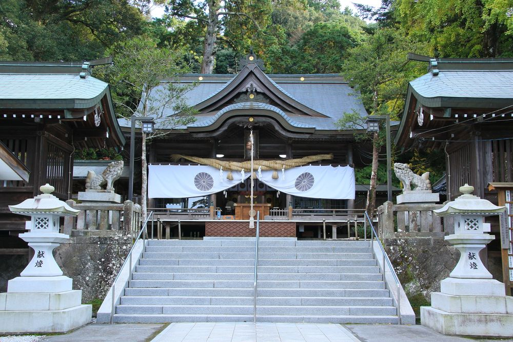

西寒田神社（Sasamuta-jinja）

住所
〒870-1123
大分県大分市寒田1644番地
旧国名
豊後国一宮
御祭神
西寒多大神(ささむたのおおかみ)
西寒田神社について
応神天皇9年（278）に武内宿禰（たけちのすくね）が勅命により、本宮山山麓に社殿を建立したと伝えられ、応永15年（1408）に現在地に遷座しました。
大友氏の崇敬が厚く、大友宗麟の印章など武将の宝物が多くあります。柞原八幡宮と豊後一宮を争ったという記録があります。
8千坪を越える境内に流造の社殿が建っています。
祭神の西寒多大神は、天照大御神（あまてらすおおみかみ）・月読尊（つくよみのみこと）・天忍穂耳命（あめのおしほみみのみこ）の三柱の総称として呼ばれています。
御利益は、諸願成就で、特に歯痛への効能が知られますが、昨今は月読命の心の安定・安心のご神徳で多くの参拝者を集めています。
境内神苑に咲く名木の藤やツツジ、紅葉はとても綺麗です。
お祭り
『藤祭』・・境内にある樹齢150年の藤が四方に張り出した枝に咲き競い、多くの花見客でにぎわいます。4月中旬から下旬が見頃です。
『卯日祭』・・旧暦11月中卯日に、33年に1回行われ、祭神の神衣を新調して奉る御神衣祭があります。
御神衣の奉納に預かる家々の代表が願主となり、その時々の神職により神事が行われます。